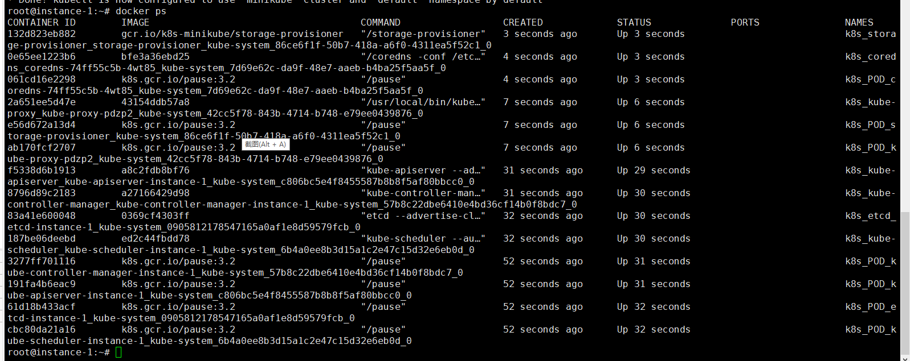
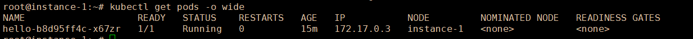

2.1 使用 Minikube 部署
Minikube 是一个创建单机 Kubernetes 集群的 工具，它可以在一台服务器上快速创建一个学习环境，单机集群也可以学习到大多数入门的 Kubernetes 知识以及上手练习。CKAD 认证并不要求掌握 Minikube，不过我们可以初步学习练习，后面再使用 kubeadm 部署多节点集群。
本篇内容较为简单，可供读者练手使用，除了会使用 minikube 部署 kubernetes 外，也会部署应用，对于本章的内容，读者可快速练习一遍，后面再详细介绍各方面的知识。
Minikube
Minikube 是一个二进制工具，项目源码或文档等内容可以在 https://github.com/kubernetes/minikube 中找到，已经编译好的二进制可执行文件，可以在仓库的 Release 中下载，Minikube 支持 Windows 、Linux、MacOS。
直接下载 minikube 最新版本的二进制文件。
可以通过官方 Github 仓库下载，也可以使用国内代理下载。
下载地址(Linux版本)：
- https://kubernetes.oss-cn-hangzhou.aliyuncs.com/minikube/releases/v1.20.0/minikube-linux-amd64
- https://storage.googleapis.com/minikube/releases/latest/minikube-linux-amd64
注：如果要下载 Win 版本，把 minkube-linux-amd64 改成 minkube-windows-amd64.exe 即可；如果是 MacOS 则是 minikube-darwin-amd64。另外要注意下载的版本号 。
阿里云源下载的二进制工具，本身可以使用国内镜像，不需要代理，可以到仓库了解 https://github.com/AliyunContainerService/minikube。
你也可以看官方文档，按照文档安装 https://minikube.sigs.k8s.io/docs/start/ 。
curl -Lo minikube {下载地址}
chmod +x minikube
sudo mv minikube /usr/local/bin
部署
直接执行 minikube start 命令即可进行部署，但是国内会被墙，可能拉取不了镜像，需要设置代理，可参考 2.4 章设置镜像代理 。
# 国外服务器
minikube start
# 使用阿里云版本时，指定国内源
minikube start --image-mirror-country=cn
# 使用阿里云版本时，指定镜像源
minikube start --image-mirror=registry.cn-hangzhou.aliyuncs.com/google_containers
注：虚拟机安装或其他方式，需要配置安装驱动，请参考官方文档。还是无法拉取镜像的话，打开文档看看 https://minikube.sigs.k8s.io/docs/handbook/vpn_and_proxy/ ，配置代理试试。
接下来 minikube 会拉取各种镜像，需要一些时间。
* Pulling base image ...
* Downloading Kubernetes v1.20.2 preload ...
> preloaded-images-k8s-v10-v1...: 491.71 MiB / 491.71 MiB 100.00% 60.04 Mi
> gcr.io/k8s-minikube/kicbase...: 357.67 MiB / 357.67 MiB 100.00% 7.41 MiB
* Creating docker container (CPUs=2, Memory=4000MB) .../
通过 minikube version 命令可以查看 minikube 的版本，接下来我们使用 minikube start 命令，可以直接创建一个 kubernetes 集群。
问题一
如果启动不起来提示没有 docker 用户，这是因为默认不应该使用 root 用户执行命令和启动程序，可以创建一个 docker 用户，也可以使用 --driver=none 指定不用 docker 用户。
如果要用 docker 用户：
groupdel docker
useradd -m docker
passwd docker
# 修改密码后，加入用户组
gpasswd -a docker docker
打开 /etc/sudoers 文件，在 root ALL=(ALL:ALL) ALL 下 增加新的一行：
docker ALL=(ALL)ALL
然后切换为 docker 用户：su docker 。
如果不用 docker 用户，只需要在初始化集群时加上 --driver=none 。
minikube start --driver=none
问题二
PS：如果报 X Exiting due to GUEST_MISSING_CONNTRACK: Sorry, Kubernetes 1.20.2 requires conntrack to be installed in root's path，则需要安装 constrack ，apt install conntrack。
如果没有问题，会自动进行安装。

minikube 完成初始化后，打开新的终端窗口，执行 minikube dashboard 启动面板，根据 URL 地址，可以访问面板。
正常的话，执行 docker ps 后是这样的。

查看集群状态
本身 minikube 带有一些简单的 kubectl 命令，可以查看集群状态信息。
获取集群所有节点(机器)：
minikube kubectl get nodes
获取集群所有命名空间：
minikube kubectl get namespaces
查看集群所有 Pod：
minikube kubectl -- get pods -A

创建资源
由于 minikube 不会自动下载 kubectl、kubelet 等工具，我们需要手动安安装，你可以参考 2.2 章的安装方法， 关于 kubectl 、kubelet ，后面的章节会详细介绍。最简单的安装方法：
# 仅供 ubuntu 参考
snap install kubectl --classic
snap install kubelet --classic
本节的内容供简单练习，不会详细说明命令的作用和相关知识，待读者阅读后面的章节时，可以学习到更多内容。
创建 Deployment
Deployment 可以部署应用并管理实例数量，它提供了一种故障的自我修复机制，当应用挂了后，Deployment 可以自动启动一个新的实例，维护固定数量的 Pod。
kubectl create deployment命令创建管理 Pod 的 Deployment。
# 格式 kubectl create deployment {deployment名称} {参数}
kubectl create deployment hello --image=nginx:latest
查看 Deployment：
kubectl get deployments
NAME READY UP-TO-DATE AVAILABLE AGE
hello 1/1 1 1 6m39s
查看 Pod ：
kubectl get pods
NAME READY STATUS RESTARTS AGE
hello-b8d95ff4c-x67zr 1/1 Running 0 7m8s
查看集群事件：
kubectl get events
查看 kubectl 配置：
kubectl config view
创建 Service
Service 为 Pod 提供了一种外网访问能力，默认情况下，Pod 只能在 Kubernetes 集群的同一节点访问，如果要外部网络访问，则需要为 Pod 暴露一个 Kubnetes Service，Service 为 Pod 提供了外网访问能力。这里我们把上一小节的 hello 暴露出去。
nginx 镜像会暴露一个 80 端口，通过 80 端口我们可以访问到 nginx 服务。但是在 Kubernetes 中，则可能有些麻烦。
每个 Pod 在集群中都有一个唯一 IP，我们可以查看详细的 Pod 信息：
kubectl get pods -o wide

我们可以直接访问它：
curl 172.17.0.3

为了能够在外网访问，我们创建 Service：
kubectl expose deployment hello --type=LoadBalancer --port=80
然后查看刚刚创建的 service：
kubectl get service hello
# 或
minikube service hello
NAME TYPE CLUSTER-IP EXTERNAL-IP PORT(S) AGE
hello LoadBalancer 10.102.73.188 <pending> 80:31286/TCP 5s
|-----------|-------|-------------|-------------------------|
| NAMESPACE | NAME | TARGET PORT | URL |
|-----------|-------|-------------|-------------------------|
| default | hello | 80 | http://10.170.0.5:31286 |
|-----------|-------|-------------|-------------------------|
* Opening service default/hello in default browser...
http://10.170.0.5:31286
此时，在集群内，通过 http://10.170.0.5:31286 可以访问此 Pod，或者在外网访问 31286 端口。
清理集群资源
由于 Minikube 创建的资源只是单机的，同时会产生很多 Docker 容器，我们练习完毕后，就要清除环境，以免影响后续实践环境。
首先清除 service、deployment (可以跳过这个步骤)。
kubectl delete service hello
kubectl delete deployment hello
然后停止 Minikube 虚拟机（VM）：
minikube stop
接着删除 Minikube 虚拟机（VM）：
minikube delete